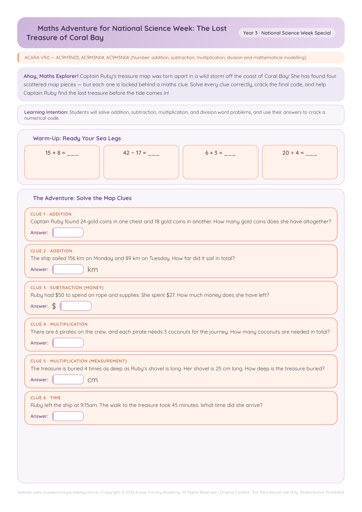

Year 3 · Maths · Number · Free Printable
Maths Treasure Hunt Adventure
Solve Year 3 number problems through an engaging treasure hunt adventure.

⬇ Download Free PDF
Answer Key Included
Learning Intention
Students will solve practical Year 3 number problems using efficient strategies for addition, subtraction and multiplicative thinking in a treasure-hunt context.
Australian Curriculum
AC9M3N03 — Extend and apply knowledge of addition and subtraction facts to 20 to develop efficient mental strategies for computation with larger numbers without a calculator.
Teacher Notes
Use for independent practice, maths rotations, homework or enrichment. Students follow the treasure hunt path and solve each number challenge along the way. Answer key is included with the worksheet for teachers and parents.
Skills Practised
- Efficient mental addition and subtraction
- Number problem solving
- Reading and interpreting multi-step word problems
- Applying known facts to larger numbers